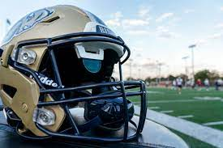

Site 1; Author: Colton Jannusch |
"Revolutionizing Helmet Technology" |
Abstract: |
This article explains the challenges faced by a hard-of-hearing college football team. It explains the partnership between AT&T and Gallaudet college that created a helmet with a clear screen that can display game plays. This helped the teams communication because the coaches were able to communicate plays to the quarterback without waving him down or using sign language. It also explains how helmets like this will be able to prevent injuries. The article ends while mentioning how the wide use of technology like this can change the game for many players, and help with common issues like stealing plays. |
Site 2; Author: David J. Craig |
"New Smart Helmet could Spot Concussions in Real Time" |
Abstract: |
This article talks about the dangers of concussions in contact sports like football. It focuses on football, and goes into detail on the new product called "NOMO" that is being used in football helmets to detect brain waves. The author, David J. Craig mentions that the technology used is like that of an EEG that can measure brain waves. This is used in order to be able to tell if brain damage is suffered by players after getting hit. He also mentions that this technology may eventually be able to be used in a range of different sports. |